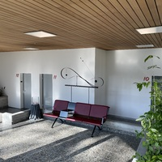
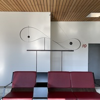
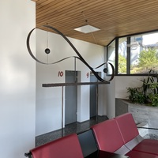
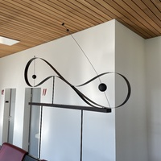
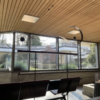
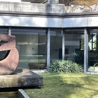

Walter Linck, Vegetativ III (1958)
Contenu
Urheber:in Text/Bild/Video/Audio
Christopher Kilchenmann
Künstler:in
Walter Linck
Eigene Rolle definieren
DE
Fan
Kategorie
DE
Kunstwerk
Auf welches Jahr bezieht sich der Beitrag?
DE
1958 2. ESS-SPA
Gattung des dargestellten Motives
DE
Skulptur
DE
Installation
Kommentar
Aussi fine qu'une plume dans le vent ou qu'une balance sensible qui réagit immédiatement à la moindre variation de poids. Avec ses sculptures en métal, Walter Linck voulait rendre le mouvement visible. Le moindre contact ou le moindre souffle d'air fait vibrer l'œuvre d'art. Selon Linck, le huit courbé représente une boucle infinie et est un symbole de mouvement et d'éternel retour.
Il est possible qu'en raison de sa fragilité, Vegetativ III ne se trouve pas à l'extérieur, mais dans le foyer protégé du bâtiment de mise en bière du cimetière de Bremmgarten à Berne. Il est également envisageable qu'une œuvre d'art qui peut amortir par son mouvement calme soit adaptée à un tel espace où la sensibilité et la vulnérabilité de l'être humain sont mises en évidence.
Il est possible qu'en raison de sa fragilité, Vegetativ III ne se trouve pas à l'extérieur, mais dans le foyer protégé du bâtiment de mise en bière du cimetière de Bremmgarten à Berne. Il est également envisageable qu'une œuvre d'art qui peut amortir par son mouvement calme soit adaptée à un tel espace où la sensibilité et la vulnérabilité de l'être humain sont mises en évidence.

Vegetativ III
Vegetativ III
Vegetativ III
Vegetativ III
Vegetativ III
Vegetativ III